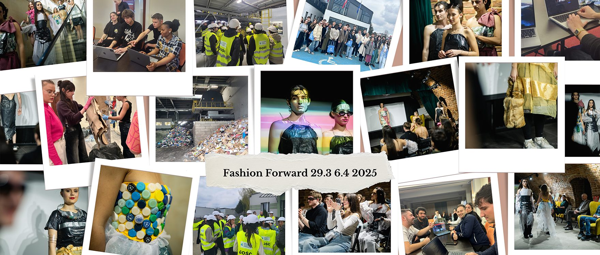
Erasmus+ Youth Exchange · Project story
Fashion Forward: Recycled Runway
Turning waste into fashion: how young people redesigned the future in Krosno.
- When
- 29 March – 6 April 2025
- Where
- Krosno, Poland
- Who
- 28 participants
- From
- Poland, Portugal, North Macedonia, Hungary
- Subjects
- Sustainable fashion, digital innovation
01
The mission
From 29 March to 6 April 2025, Krosno became the stage for innovation, creativity and climate action through Fashion Forward: Recycled Runway, an Erasmus+ Youth Exchange organised by Fundacja Patrz Globalnie. The project brought together 28 participants from Poland, Portugal, North Macedonia and Hungary to tackle one of today’s biggest challenges: the destructive impact of the fast fashion industry.
Our mission was bold: transform waste into fashion, inspire sustainable choices, and use the power of technology to amplify change. More than a typical exchange, Fashion Forward combined AI-powered creativity, hands-on upcycling and intercultural learning, giving participants the tools to rethink fashion and stand up for a greener future.
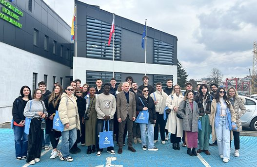
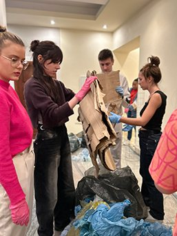
02
Inside the recycling centre
One of the most eye-opening experiences was our visit to MPGK Krosno, the city’s waste management and recycling facility. We followed the entire recycling chain, from sorting materials to advanced water purification, and learned how the city uses fermentation to produce biogas and generate electricity.
In the clothing section of the facility we saw how everyday choices and the fast fashion industry affect the environment, and discovered practical circular-economy solutions in action. For many, it was a powerful reminder that sustainability begins at home, and that every small effort counts, including what we wear and where our materials come from.
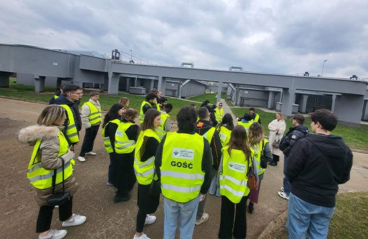
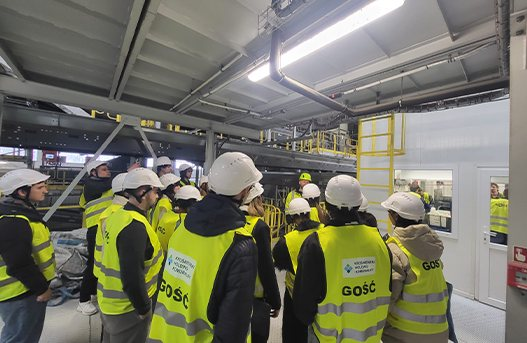
03
The workshop
Back at our workspace, creativity took centre stage. Armed with rubbish collected around the venue and during the project, discarded clothing from MPGK, and tools like glue guns, sewing machines and wire, we set out to create bold fashion statements.
Combining AI design tools like Midjourney with hands-on craftsmanship, we turned waste into unique outfits full of meaning. These weren’t just clothes: they were manifestos for a sustainable future.
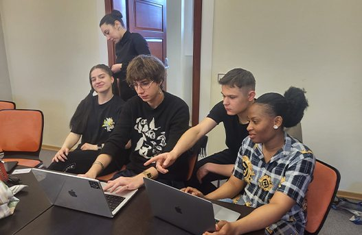
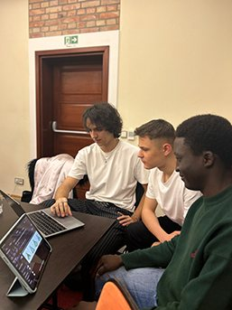
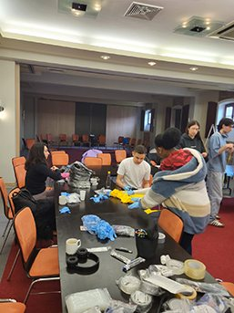
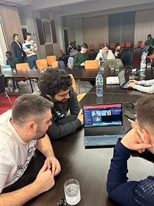
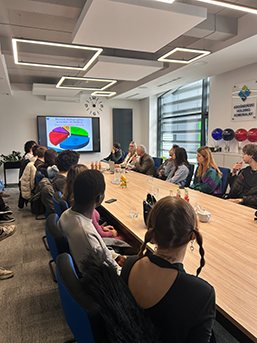
04
The catwalk
To share these messages with the community, we organised the Fashion Forward Catwalk on 4 April at Centrum Aktywności Młodzieży (the Youth Centre in Krosno). Before the runway began, guests watched an AI-generated short film created by participants with Sora AI, KlingAI, FakeYou and InVideo AI, showing dramatic, emotional scenes about the impact of fast fashion on the planet.
The catwalk itself featured stunning upcycled designs that wowed the audience and sparked conversations about conscious consumerism. It proved that fashion can be both beautiful and responsible.
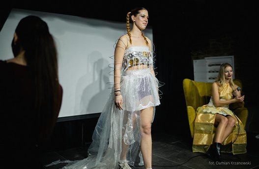
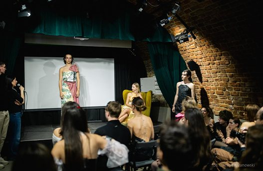
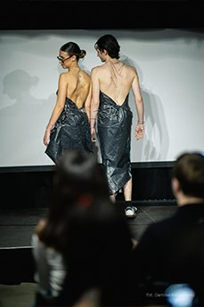
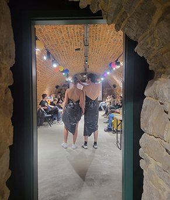
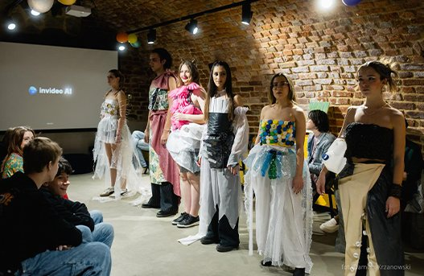
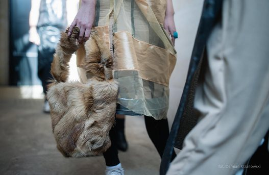
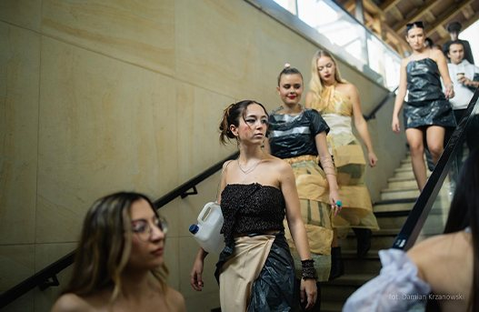
Catwalk photos: Damian Krzanowski · scroll sideways for more →
Videos come from YouTube (Google) and load only when you press play. How we handle this
05
Beyond the runway
Fashion Forward wasn’t only about fashion; it was about people, ideas and cultural exchange. Through lively discussions on fast fashion, creative solution-building sessions, and intercultural evenings filled with music and food, participants built friendships that crossed borders. These shared moments gave rise to future initiatives like Sustainable Fashion Clubs, so the impact continues long after the project.
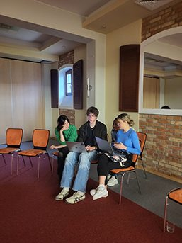
Fashion Forward: Recycled Runway was more than a youth exchange. It was a movement toward responsibility, creativity and change.
Thank you
We are grateful to everyone who supported us, including the local partners who amplified our message and helped us reach the community.
- City of KrosnoMunicipality
- Krosno 112Local newspaper
- MPGK KrosnoFacebook
- MPGK KrosnoWebsite
- Centrum Aktywności Młodzieży KrosnoYouth Centre
- Dzieje się w KrośnieFacebook
- Krosno 24Local newspaper
- Młodzieżowy Strajk Klimatyczny – KrosnoFacebook
- Conexão JovemPortuguese partner
- Association for Youth Activism and Growth – ExcelMacedonian partner